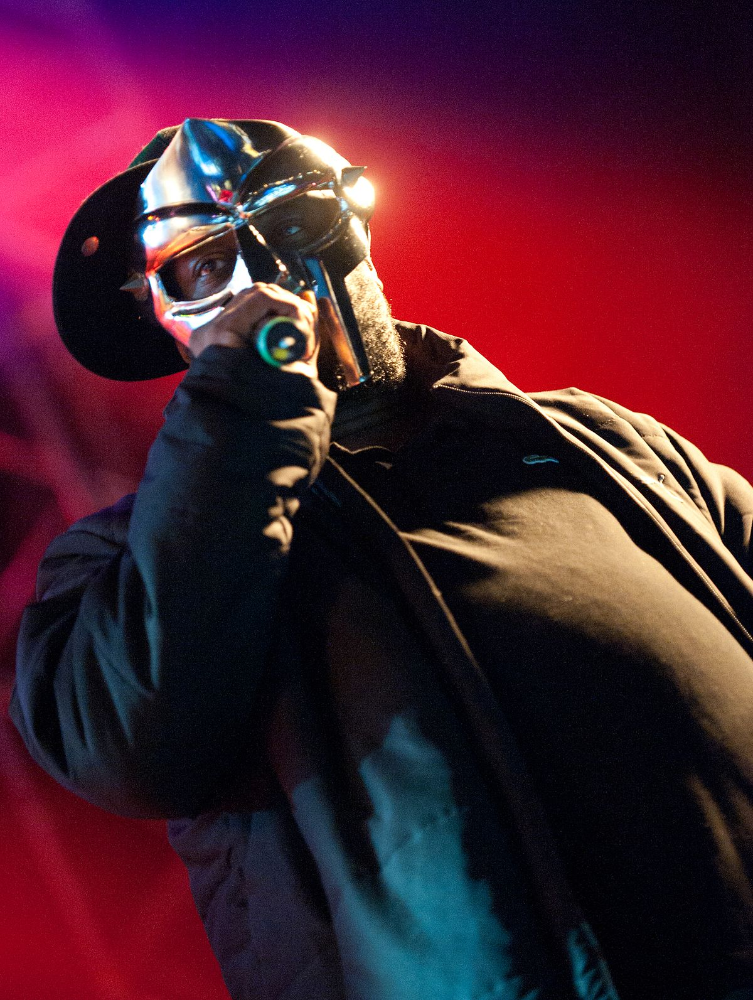
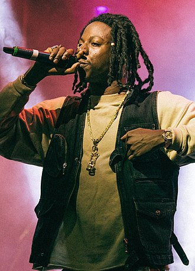

Favoriete artiesten
Er zijn natuurlijk veel verschillende hiphop artiesten waar ik naar luister. Het is daarom lastig om een keuze te maken en mijn favoriet te kiezen. Toch zal ik jullie wat gaan vertellen over een aantal van mijn favoriete artiesten op dit moment.
MF DOOM
-
Persoonlijke informatie
Daniel Dumile, 49 (2020), Engeland
-
Jaren actief
1988-2020
-
Genres
Alternative/Underground hip hop
-
Maandelijkse luisteraars
7,300,074
Daniel Dumile, vooral bekend onder zijn artiestennaam MF Doom of simpelweg Doom (beide gestileerd in hoofdletters), was een Brits-Amerikaanse rapper en producer. Bekend om zijn ingewikkelde woordspelingen, kenmerkende metalen masker en 'superschurk'-podiumpersonage, werd Dumile in de jaren 2000 een belangrijk figuur van underground hiphop en alternatieve hiphop. Na zijn dood beschreef Variety hem als een van de "meest gevierde, onvoorspelbare en enigmatische figuren" uit de scène.
Populairste Albums
MM.. Food
Releasedatum: 2004
Genre: Alternative hip hop
Madvillainy
Releasedatum: 2004
Genre: Alternative hip hop
Populairste nummers
-
Rapp Snitch Knishes - 234,271,548 streams
Album: MM.. Food
-
Doomsday - 179,753,191 streams
Album: Operation Doomsday
-
All Caps - 128,941,273 streams
Album: Madvillainy
Joey Bada$$
-
Persoonlijke informatie
Jo-Vaughn Virginie Scott, 28, New York City
-
Jaren actief
2010-nu
-
Genres
East Coast hip hop/progressive rap
-
Maandelijkse luisteraars
8,875,081
Jo-Vaughn Virginie Scott (geboren 20 januari 1995), bekend onder zijn artiestennaam als Joey Badass (gestileerd als Joey Bada $$), is een Amerikaanse rapper. Hij komt uit Brooklyn, New York City en is een van de oprichters van het hiphopcollectief Pro Era, met wie hij drie mixtapes heeft uitgebracht, evenals zijn talrijke soloprojecten. Joey Badass bracht in juni 2012 zijn debuutmixtape uit, 1999, en kreeg lovende kritieken en erkenning, gevolgd door Rejex in september en Summer Knights in juli 2013. Zijn debuutstudioalbum, B4.Da.$$, werd uitgebracht in januari 2015. In 2016 maakte hij zijn televisiedebuut in de USA Network-serie Mr. Robot. Zijn tweede en derde studioalbum, All-Amerikkkan Badass en 2000, werden respectievelijk in april 2017 en juli 2022 uitgebracht.
Populairste Albums
ALL-AMERIKKKAN BADA$$
Releasedatum: 2017
Genre: Conscious hip hop
1999
Releasedatum: 2012
Genre: East Coast hip hop
Populairste nummers
-
Love is only a Feeling - 390,387,124 streams
Album: Is een single
-
DEVASTATED - 336,007,195 streams
Album: ALL-AMERIKKKAN BADA$$
-
Paper Trail$ - 119,818,721 streams
Album: B4.DA.$$